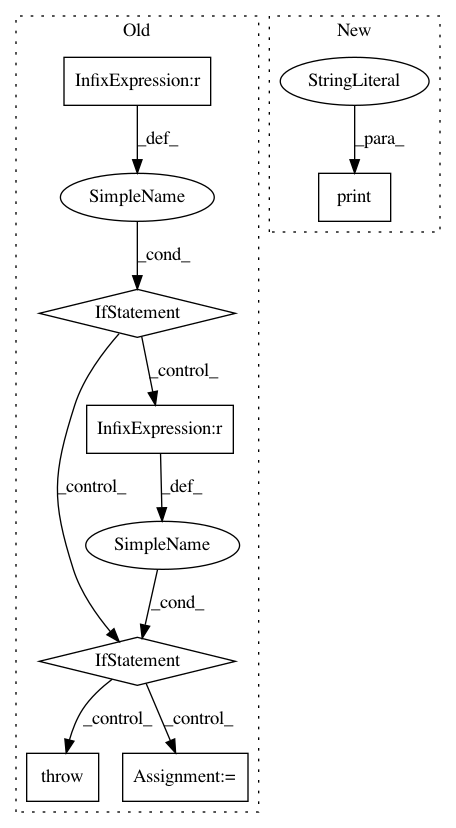

8b3f79f3079834f00c7ec62d5decd6bc026c1bc8,python/ray/tune/examples/tune_cifar10_gluon.py,,,#,186
Before Change
from ray.tune.schedulers import AsyncHyperBandScheduler, FIFOScheduler
ray.init()
if args.scheduler == "fifo":
sched = FIFOScheduler()
elif args.scheduler == "asynchyperband":
sched = AsyncHyperBandScheduler(
metric="mean_loss", mode="min", max_t=400, grace_period=60)
else:
raise NotImplementedError
tune.run(
train_cifar10,
name=args.expname,
verbose=2,
After Change
"lr": tune.loguniform(1e-4, 1e-1),
"momentum": tune.uniform(0.85, 0.95),
})
print("Best hyperparameters found were: ", analysis.best_config)
In pattern: SUPERPATTERN
Frequency: 3
Non-data size: 7
Instances
Project Name: ray-project/ray
Commit Name: 8b3f79f3079834f00c7ec62d5decd6bc026c1bc8
Time: 2020-11-14
Author: rliaw@berkeley.edu
File Name: python/ray/tune/examples/tune_cifar10_gluon.py
Class Name:
Method Name:
Project Name: Rostlab/nalaf
Commit Name: e4ccf3b8e144dba3b9c4e448be8fe1443104c10e
Time: 2017-02-07
Author: i@juanmi.rocks
File Name: nalaf/utils/graphs.py
Class Name: Path
Method Name: __init__
Project Name: uber/ludwig
Commit Name: e9aea97df1dc7878827ac193ba75cbea0b3ee351
Time: 2020-05-05
Author: jimthompson5802@gmail.com
File Name: ludwig/models/modules/sequence_decoders.py
Class Name: SequenceGeneratorDecoder
Method Name: __init__